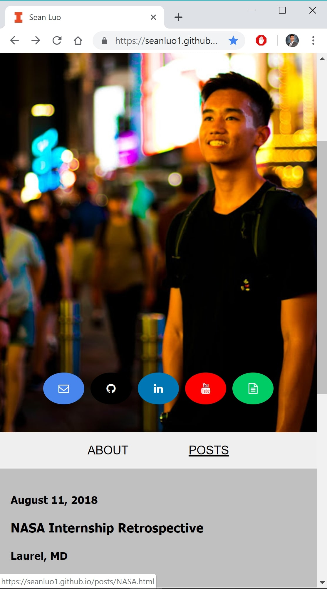

A year ago, I decided I wanted to challenge myself with building a website from scratch. I thought that it would be a cool place to showcase some of the things I’ve done, and even better, it would be a fun challenge to force myself to learn something new outside of the classroom.
Not really having any idea on where to start with how to build a website, I turned to a free resource available to all UIUC students: Lynda. Lynda is an awesome website where you can watch professional lessons on anything from Microsoft Office products to entry-level college courses. It was on Lynda that I found intro courses on HTML, CSS, and JavaScript.
I learned to write markup starting with a blank text document. I learned how to query screen sizes and create dynamic elements in a page to match said screen sizes. It was a really great experience to learn how to define every element of my website explicitly, but I couldn’t help but feel that it was a bit tedious to have to write specific CSS and HTML divs for every single piece I added to my website.


That’s when I heard about Twitter’s Bootstrap. All the tediousness that I mentioned above about having to explicitly define every aspect of every single piece of my website seemed like it could be solved with Bootstrap’s built-in elements. Bootstrap was still flexible enough for me to design my website exactly how I wanted it to be.
And that’s where I’m at with my website now. There’s still so much I need to learn to get my website to where I want it to be. For example, I want to scale my images so that smaller screens will have smaller versions of images that load faster. I need to find an efficient way to format my blog posts so that they don’t look like blank text documents. There’s so much more to learn, and I’m excited for all of it.